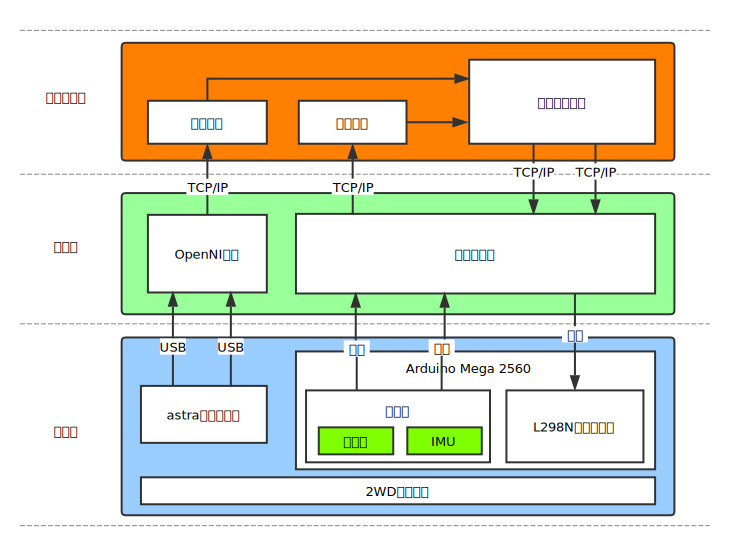

Saturn Robot
Saturn Robot是一款基于ROS的视觉导航轮式机器人平台。“Saturn”译为土星、农业之神，这也是我们为什么命名为Saturn的原因：它出自西农学子之手，因此以Saturn(寓意为农业)为之命名。
特性
本项目的目的是设计一款低成本的机器人平台，因此具有一下几种特性：
- 易扩展：采用ROS(机器人操作系统)作为软件平台，通过创建具有特定功能的功能包，即可完成相关功能的集成；另外，使用Jetson TK1(上位机)、Arduino Mega2560(下位机)，可扩展多种传感器和外设。
- 低成本：使用低成本高性能的Jetson TK1作为上位机；使用基于单目或双目摄像头的视觉导航，相比传统的激光雷达，成本降低很多倍。
- 视觉导航：目前使用Orbbec Astra 3D摄像头作为主要的视觉传感器
总体架构图
Saturn Robot整体架构主要有三层，硬件层、驱动层、操作系统层。这三层自底向上，互相依赖，构成了整个机器人系统。下图为Saturn Robot的结构图：

其中，驱动层和操作系统层使用串口通信，借助ROS bridge功能包的桥接，这样就实现了操作系统层和驱动层的代码分离，从而降低了这两层的耦合性。
硬件参数
外形参数
| 参数 |
值 |
| 轮胎直径(Wheel Diameter) |
65mm |
| 尺寸(Size) |
198.07x186mm |
| 两轮间距(Wheel Separation) |
193mm |
| 底盘大小(Chassis) |
144x119x3.66 |
电动机参数
| 参数 |
值 |
| 工作电压 |
7～13V |
| 额定功率 |
7W |
| 电机类型 |
永磁有刷 |
| 堵转电流 |
5.4A |
| 堵转扭矩 |
15kgf.cm |
| 额定电流 |
540mA |
| 额定扭矩 |
1.5kgf.cm |
| 原始转速 |
15000rpm |
| 空载转速 |
500rpm |
| 减速比 |
1:30 |
| 输出轴直径 |
6mm |
| 输出轴类型 |
D型偏心轴 |
NOTE：以上数据在12V环境下测量的到。
编码器参数
| 参数 |
值 |
| 型号 |
AB相增量式霍尔（磁）编码器 |
| 线数 |
390（以减速器输出轴测量） |
| 供电电压 |
5.0V |
| 特色功能 |
自带上拉整形，单片机可以直接读取 |
NOTE:详细内容请访问:https://github.com/Saturn-robot/Encoder_driver
IMU参数
| 参数 |
值 |
| 型号 |
GY-85 |
| 加速度计分辨率 |
13位 |
| 陀螺仪敏感范围因子 |
14.375 LSB pro °/s |
| 电子罗盘数字分辨率 |
0.92 |
NOTE:详细内容请访问:https://github.com/Saturn-robot/GY85_driver
引脚分配
L298N电动机驱动板
| L298N |
Arduino |
| ENA |
D5 |
| IN1 |
D7 |
| IN2 |
D8 |
| ENB |
D6 |
| IN3 |
D9 |
| IN4 |
D10 |
AB相编码器
| Encoders |
Arduino |
| 左A相 |
D2 |
| 左B相 |
D22 |
| 右A相 |
D3 |
| 右B相 |
D24 |
| 左+5V |
+5V |
| 左GND |
GND |
| 右+5V |
+5V |
| 右GND |
GND |
GY85惯性测量模组
| GY85 |
Arduino |
| VCC |
+5V |
| GND |
GND |
| SDA |
D20 |
| SCL |
D21 |
超声波传感器
| GY85 |
Arduino |
| VCC |
+5V |
| GND |
GND |
| TrigPin |
D25 |
| EchoPin |
D26 |
硬件驱动